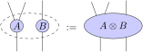
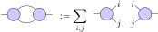

4. Tensor Network Theory#
Contents
4.1. Overview#
In this lecture we will introduce the basic concepts of tensor network theory. We will start with a brief overview of the history of tensor networks and their relevance to modern physics. We will then introduce the graphical notation that is often used to simplify expressions, and discuss the relevant operations and decompositions along with their computation complexity and their relevance to quantum many-body physics.
This discussion is largely based on [BC17].
This lecture also serves as a brief introduction to
TensorOperations.jl, and showcases some more
features of TensorKit.jl as well. Note that
TensorKit already re-exports the @tensor macro from TensorOperations, so it is not
necessary to import it separately if TensorKit is already loaded.
using TensorKit
using Test # for showcase testing
4.1.1. History#
The history of tensor networks is a fascinating journey through the evolution of profound theoretical ideas and evolutions, as well as the development of computational methods and tools. These ideas have been developed in a variety of contexts, but have been especially relevant to the study of quantum physics and machine learning.
Early Foundations:
The roots of tensor networks can be traced back to the early development of linear algebra and matrix notation in the 19th century, pioneered by mathematicians like Arthur Cayley and James Sylvester.
The concept of tensors as multi-dimensional arrays of numbers began to emerge in the late 19th and early 20th centuries.
Matrix Product States and DMRG:
The birth of modern tensor network theory can be attributed to the introduction of MPS in the 1960s (?).
One of the earliest, and still most widely used tensor network algorithm is DMRG. It was developed by Steven White in 1992, and provides one of the most efficient methods for simulating one-dimensional quantum many-body systems.
Quantum Information Theory:
In the 1980s and 1990s, the field of quantum information theory began to emerge, driven by (add names here)
Concepts such as quantum entanglement and quantum information became central to the study of quantum many-body systems.
Higher-Dimensional Tensor Networks:
As the field progressed, tensor network methods were extended to higher-dimensional systems, leading to the emergence of more general tensor network states (TNS)..
Two-dimensional tensor networks such as Projected Entangled Pair States (PEPS) and Multi-scale Entanglement Renormalization Ansatz (MERA) were introduced in the early 2000s.
Tensor Networks in other disciplines:
Many of the concepts and methods developed in the context of tensor networks have been applied to other disciplines, one of the most prominent being machine learning.
Unsuprisingly, they also play a central role in quantum computing, where tensor network algorithms provide a natural language to explore quantum circuit simulations.
Ongoing Research and Applications
Tensor network theory continues to be a vibrant and evolving field with ongoing research in various directions, such as the development of efficient tensor contraction algorithms, the application of tensor networks for understanding quantum phases of matter, the development of tensor network algorithms for quantum computing, and the application of tensor networks to machine learning.
4.2. Graphical Notation and Tensor Operations#
One of the main advantages of tensor networks is that they admit a very intuitive graphical notation, which greatly simplifies the expressions involving numerous indices. This notation is based on the idea of representing a single tensor as a node in a graph, where the indices of the tensor are depicted by legs sticking out of it, one for each vector space. As an example, a rank-four tensor \(R\) can be represented as:
4.2.1. Indexing#
In this notation, the individual components of the tensor can be recoverd by fixing the open legs of a diagram to some value, and the resulting diagram is then a scalar. For example, the component \(R_{i_1,i_2,i_3,i_4}\) is given by:
4.2.2. Grouping and Splitting of Indices#
Because of the isomorphism (3.5), the legs of the tensor can be freely moved around, as long as their order is preserved. In some contexts the shape of the node and the direction of the tensor can imply certain properties, such as making an explicit distinction between the isomorphic representations, but in what follows we will not make this distinction.
Furthermore, this naturally gives a notion of grouping and splitting of indices, which is just a reinterpretation of a set of neighbouring vector spaces as a single vector space, and the inverse operation. For example, the following diagrams are equivalent:
Owing to the freedom in choice of basis, the precise details of grouping and splitting are not unique. One specific choice of convention is the tensor product basis, which is precisely the one we have used in the discussion of multi-linear algebra. More concretely, one choice that is often used is the Kronecker product, which in the setting of column-major ordering is given explicitly by grouping indices as follows:
Here \(d_i\) is the dimension of the corresponding vector space, and \(I\) is the resulting linear index. Note again that so long as the chosen convention is consistent, the precise method of grouping and splitting is immaterial.
This can be conveniently illustrated by the reshape function in Julia, which performs
exactly this operation. For simple arrays, this operation does nothing but change the size
property of the data structure, as the underlying data necessarily needs to be stored in a
linear order in memory, as computer adresses are linear. Because of this, in tensor
networks, these operations are typically left implicit.
A = reshape(1:(2^4), (2, 2, 2, 2))
B = reshape(A, (4, 2, 2))
C = reshape(A, (2, 4, 2))
# ...
2×4×2 reshape(::UnitRange{Int64}, 2, 4, 2) with eltype Int64:
[:, :, 1] =
1 3 5 7
2 4 6 8
[:, :, 2] =
9 11 13 15
10 12 14 16
4.2.3. Outer Products#
Of course, in order to really consider a tensor network, it is necessary to consider diagrams that consist of multiple tensors, or in other words of multiple nodes. The simplest such diagram represents the outer product of two tensors. This is represented by two tensors being placed next to each other. The value of the resulting network is simply the product of the constituents. For example, the outer product of a rank three tensor \(A\) and a rank two tensor \(B\) is given by:
4.2.4. Traces#
More complicated diagrams can be constructed by joining some of the legs of the constituent tensors. In a matter similar to the conventional Einstein notation, this implies a summation over the corresponding indices.
If two legs from a single tensor are joined, this signifies a (partial) trace of a tensor over these indices. For example, the trace of a rank three tensor \(A\) over two of its indices is given by:
In this notation, the cyclic property of the trace follows by sliding one of the matrices around the loop of the diagram. As this only changes the placement of the tensors in the network, and not the value, the graphic proof of \(\text{Tr}(AB) = \text{Tr}(BA)\) is found.
4.2.5. Contractions#
The most common tensor operation used is contraction, which is the joining of legs from different tensors. This can equivalently be thought of as a tensor product followed by a trace. For example, the contraction between two pairs of indices of two rank-three tensors is drawn as:
Famililiar examples of contraction are vector inner products, matrix-vector multiplication, matrix-matrix multiplication, and matrix traces.
4.3. Network Contractions#
Combining the operations defined above, it is possible to construct arbitrarily complicated tensor networks, which can then be evaluated by a sequence of pair-wise operations. The result then reduces to a tensor which has a rank equal to the number of open legs in the network. For example, the following diagram represents a generic tensor network:

4.3.1. Notation#
In order to evaluate such networks, it is necessary to define a notational convention for specifying a network with text. One of the most common conventions is that of Einstein notation, where each index of a tensor is assigned a label, and repeated labels are implicitly summed over. For example, the outer product, trace, and inner product can respectively be obtained as:
A = rand(2, 2, 2)
B = rand(2, 2)
@tensor C[i, j, k, l, m] := A[i, j, k] * B[l, m]
@tensor D[i] := A[i, j, j]
@tensor E[i, j, l] := A[i, j, k] * B[l, k]
size(C), size(D), size(E)
((2, 2, 2, 2, 2), (2,), (2, 2, 2))
Note
The @tensor macro can be used to either create new tensors, using the := assignment, or
to copy data into existing tensors using =. In the latter case, the tensor must already
exist and have the right dimensions, but less additional memory is allocated.
This notation is very useful indeed, but quickly becomes unwieldy when one wishes to specify in what order the pairwise operations should be carried out. Thus, in the same spirit but with a minor modification, the NCON notation was introduced. In this notation, the indices of a tensor are assigned integers, and pairwise operations happen in increasing order. Similarly, negative integers are assigned to open legs, which determine their resulting position. For example, the diagram from network can be written as:
B = rand(2, 2, 2, 2)
C = rand(2, 2, 2, 2, 2)
D = rand(2, 2, 2)
E = rand(2, 2)
F = rand(2, 2)
@tensor begin
A[-1, -2] := B[-1, 1, 2, 3] * C[3, 5, 6, 7, -2] * D[2, 4, 5] * E[1, 4] * F[6, 7]
end
2×2 Matrix{Float64}:
3.43286 3.24306
3.65694 3.55665
4.3.2. Contraction Order and Complexity#
While tensor networks are defined in such a way that their values are independent of the order of pairwise operations, the computational complexity of evaluating a network can vary wildly based on the chosen order. Even for simple matrix-matrix-vector multiplication, the problem can easily be illustrated by considering the following two equivalent operations:
If both \(A\) and \(B\) are square matrices of size \(N \times N\), and \(v\) and \(w\) are vectors of length \(N\), the first operation requires \(2N^2\) floating point operations (flops), while the second requires \(N^3 + N^2\) flops. This is a substantial difference, and it is clear that the first operation is to be preferred.
More generally, the amount of flops required for contracting a pair of tensors can be determined by considering the fact that the amount of elements to compute is equal to the product of the dimensions of the open indices, and the amount of flops required to compute each element is equal to the product of the dimensions of the contracted indices. Due to this fact, it is typically the most efficient to minimize the surface area of contraction, which boils down to the heuristic of minimizing the amount of legs that are cut, also known as bubbling.
Many networks admit both efficient and inefficient contraction orders, and often it is infeasible to compute the optimal order. Take for example a ladder-shaped network, which is of particular relevance in the context of Matrix Product States, we can highlight a few possible contraction orders, for which we leave it as an exercise to determine the computational complexity:
Determining the optimal order however is a problem that is known to be NP-hard, and thus no algorithm exists that can efficiently compute optimal orders for larger networks. Nevertheless, efficient implementations allows finding optimal orders for networks of up to 30-40 tensors [PHV14], but other methods exist that can be used to determine good (not necessarily optimal) contraction orders.
TensorOperations comes with some built-in tools for facilitating this process, and in
particular the opt keyword can be used to enable the use of the algorithm from
[PHV14]. Because this uses the Julia macro system, this can be done at
compilation time, and in other words only needs to be computed once.
@tensor opt=true begin
A[i, j] := B[i, α, β, γ] * C[γ, ϵ, ζ, η, j] * D[β, δ, ϵ] * E[α, δ] * F[ζ, η]
end
2×2 Matrix{Float64}:
3.43286 3.24306
3.65694 3.55665
4.4. Tensor Factorizations#
Linear maps admit various kinds of factorizations, which are instrumental in a variety of applications. They can be used to generate orthogonal bases, to find low-rank approximations, or to find eigenvalues and vectors. In the context of tensors, the established theory for factorizations of matrices can be generalized by interpreting tensors as linear maps, and then applying the same factorization to the corresponding matrix partition of the constituent vector spaces in a codomain and domain, after which everything carries over. Thus, the only additional information that is required is the specification of this partition. In this section we will discuss the most common factorizations of tensors, but the reasoning can be generalized to any factorization of linear maps.
S1 = ℂ^2 ⊗ ℂ^2 ⊗ ℂ^2
S2 = ℂ^2 ⊗ ℂ^3
(ℂ^2 ⊗ ℂ^3)
4.4.1. Eigenvalue Decomposition#
The Eigen decomposition of a matrix \(A\) is a factorization of the form:
where \(V\) is a matrix of eigenvectors, and \(\Lambda\) is a diagonal matrix of eigenvalues. In particular, the set of eigenvectors form a basis for all possible products \(Ax\), which is the same as the image of the corresponding matrix transformation. For normal matrices, these eigenvectors can be made orthogonal and the resulting decomposition is also called the spectral decomposition.
The eigenvalue decomposition mostly finds it use in the context of linear equations of the form:
where \(v\) is an eigenvector of \(A\) with eigenvalue \(\lambda\).
For tensors, the eigenvalue decomposition is defined similarly, and the equivalent equation is diagrammatically represented as:
A = TensorMap(randn, ComplexF64, S1, S1) # codomain and domain equal for eigendecomposition
D, V = eig(A)
@test A * V ≈ V * D
Test Passed
4.4.2. Singular Value Decomposition#
The Singular Value Decomposition (SVD) can be seen as a generalization of the eigendecomposition of a square normal matrix to any rectangular matrix \(A\). Specifically, it is a factorization of the form \(A = U \Sigma V^\dagger\) where \(U\) and \(V\) are isometric matrices (\(U^\dagger U = V^\dagger V = \mathbb{1}\)), and \(\Sigma\) is a diagonal matrix of singular values. The SVD is typically used to find low-rank approximations for matrices, and it was shown [] that the best rank-\(k\) approximation is given by the SVD, where \(\Sigma\) is truncated to the first (largest) \(k\) singular values.
Again, a tensorial version is defined by first grouping indices to form a matrix, and then applying the SVD to that matrix.
A = TensorMap(randn, ComplexF64, S1, S2)
partition = ((1, 2), (3, 4, 5))
U, S, V = tsvd(A, partition)
@test permute(A, partition) ≈ U * S * V
@test U' * U ≈ id(domain(U))
@test V * V' ≈ id(codomain(V))
MethodError: no method matching tsvd(::TensorMap{ComplexSpace, 3, 2, Trivial, Matrix{ComplexF64}, Nothing, Nothing}, ::Tuple{Tuple{Int64, Int64}, Tuple{Int64, Int64, Int64}})
Closest candidates are:
tsvd(::AbstractTensorMap; trunc, p, alg)
@ TensorKit ~/.julia/packages/TensorKit/MikvC/src/tensors/factorizations.jl:253
tsvd(::AbstractTensorMap, ::Tuple{Vararg{Int64, N}} where N, ::Tuple{Vararg{Int64, N}} where N; kwargs...)
@ TensorKit ~/.julia/packages/TensorKit/MikvC/src/tensors/factorizations.jl:50
Stacktrace:
[1] top-level scope
@ In[8]:3
4.4.3. Polar decomposition#
The polar decomposition of a square matrix \(A\) is a factorization of the form \(A = UP\), where \(U\) is a unitary matrix and \(P\) is a positive semi-definite Hermitian matrix. It can be interpreted as decomposing a linear transformation into a rotation/reflection \(U\), combined with a scaling \(P\). The polar decomposition is unique for all matrices that are full rank.
A = TensorMap(randn, ComplexF64, S1, S2)
partition = ((1, 2), (3, 4, 5))
Q, P = leftorth(A, partition; alg=Polar())
@test permute(A, partition) ≈ Q * P
@test Q' * Q ≈ id(domain(Q))
4.4.4. QR Decomposition#
The QR decomposition is a factorization of the form \(A = QR\), where \(Q\) is an orthogonal matrix and \(R\) is an upper triangular matrix. It is typically used to solve linear equations of the form \(Ax = b\), which admits a solution of the form \(x = R^{-1} Q^\dagger b\). Here \(R^{-1}\) is particularly easy to compute because of the triangular structure (for example by Gaussian elimination). Additionally, for overdetermined linear systems, the QR decomposition can be used to find the least-squares solution.
A = TensorMap(randn, ComplexF64, S1, S2)
partition = ((1, 2), (3, 4, 5))
Q, R = leftorth(A, partition; alg=QR())
@test permute(A, partition) ≈ Q * R
@test Q' * Q ≈ id(domain(Q))
The QR decomposition is unique up to a diagonal matrix of phases, and can thus be made unique by requiring that the diagonal elements of \(R\) are positive. This variant is often called QRpos. Additional variants exist that are flipped and/or transposed, such as the RQ, QL, and LQ decompositions.
Note
Often it is useful to make a distinction between factorizations that are rank revealing, and factorizations that are not. A factorization is rank revealing if the rank of the matrix can be determined from the factorization. For example, the SVD is rank revealing, while the QR decomposition is not. However, the trade-off being that the SVD decomposition is substantially more expensive, the QR decomposition is often preferred in practice.
4.4.5. Nullspaces#
Finally, the nullspace of a matrix \(A\) is the set of vectors \(x\) such that \(Ax = 0\). This is typically determined via the SVD, where the nullspace is given by the right singular vectors corresponding to zero singular values.
A = TensorMap(randn, ComplexF64, S1, S2)
partition = ((1, 2), (3, 4, 5))
N = leftnull(A, partition)
@test norm(N' * permute(A, partition)) ≈ 0
@test N * N' ≈ id(codomain(N))
4.5. Conclusion#
In this lecture we have introduced the basic concepts of tensor network theory. We have defined tensors and the operations that are commonly performed, as well as the graphical notation that is used to represent them. We have also discussed the computational complexity of tensor networks, and the importance of finding efficient contraction orders. Finally, we have discussed the most common tensor factorizations, and how they can be used.